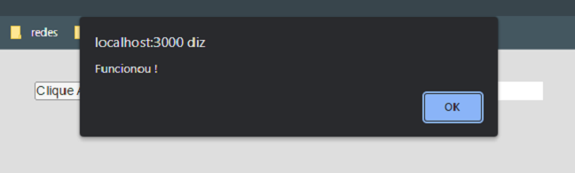

Neste capítulo iremos mostrar que é possível passar uma função/método de um componente para outro através do recurso de Props. Passaremos uma simples função com um alert() do componente PrimeiroComponente para o SegundoComponente. Essa função será executada caso o botão (que se encontra dentro do componente SegundoComponente) seja clicado.
Primeiramente iremos apresentar o arquivo App.jsx. Note que ele apresenta apenas o componente PrimeiroComponente dentro do return.
Neste exemplo teremos dois componentes:
Dentro do PrimeiroComponente faremos o import do SegundoComponente, lembre-se que podemos usar componentes dentro de componentes. Antes do return temos a função que será passada para o SegundoComponente. Essa função será passada através do recurso props. Dentro do return chamamos o SegundoComponente e passamos a props com o nome funcProp e entre as chaves temos a função que será executada.
Para usarmos as props, primeiramente temos que escrevê-la dentro dos parênteses após SegundoComponente. Neste exemplo iremos inserir a props no evento de click onClick. Caso o botão seja clicado a função/método que se encontra no PrimeiroComponente será executada.
No navegador teremos:
Ao clicar no botão, o função é executada juntamente com o método alert().
